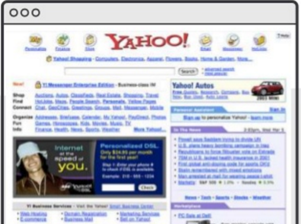
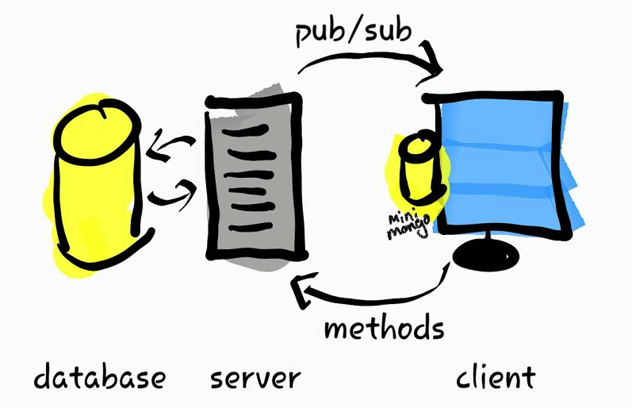
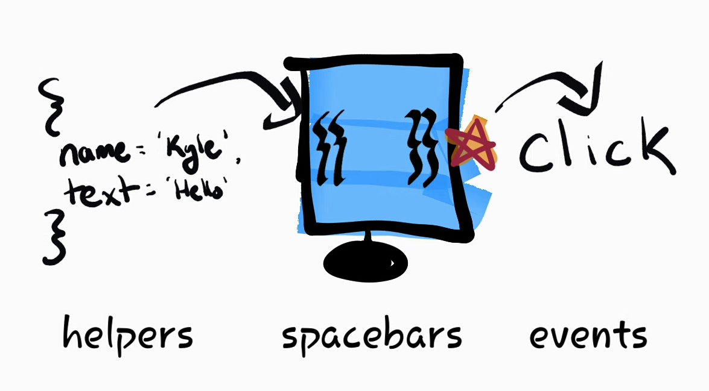
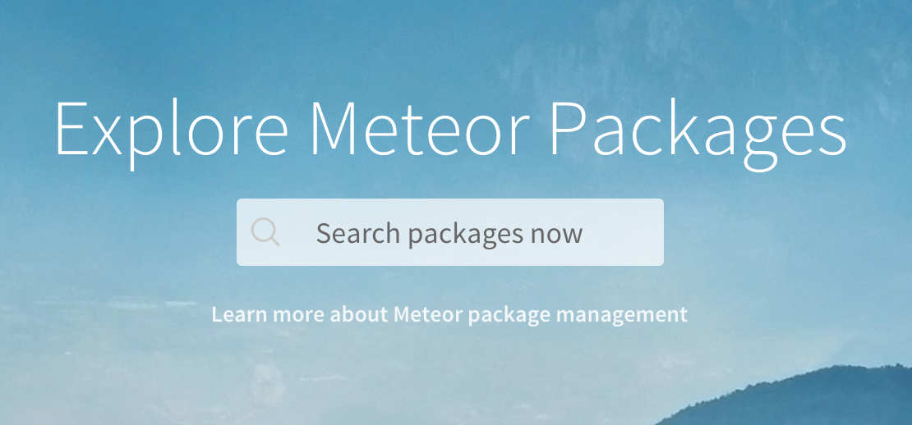

Meteor
It came for the dinosaurs and now it's coming for you
by
Kyle Mitofsky
|
@kylemit2
Presentation
|
Demo
Overview
- Who ... introductions
- What ... is Meteor
- Why ... should I care?
- How ... demo time!
- Where ... can I go to learn more?
Introductions
Who Am I
Software Development Tech Lead
at the Vermont Department of Health


Who Are you
Show of Hands
How many people....
- Have ever used Meteor?
- Do JS Development
- Don't do JS Development
What is Meteor?
Buzz Words
Reactive, Full-Stack, Development Framework
-
Reactive
- Database - Distributed Data Protocol
- Application - Hot Code Pushes
-
Full-Stack
- Runs on Client
- Runs on Server
-
Development Framework
- Command Line Tool
- Build Pipeline
Meteor Stack

Why Should I care?
Modern Web Apps
| Yesterday | Today |
|---|---|
| Browser | Mobile |
| Refresh Button | Live Update |
| Individual Sessions | Multi-User Collaboration |
| Links and Forms | Native Style GUI |
|  |
Framework Proliferation
Meteor Development Group
Fully Funded
Fully Open
Fully Awesome
How to Meteor
Demo Time!
Follow Along!
Installation
curl https://install.meteor.com/ | shNew Project
meteor create new-project-name
cd new-project
meteor
Where is the Code Running?
if (Meteor.isClient) {
// runs on the client
}
if (Meteor.isServer) {
// runs on the server
}
// runs on client and server
Directory Structure
/client- Runs only on the client/server- Runs only on the server/public- for static assets (images...)/lib- loaded before anything elsemain.*- loaded after everything else
Here's the App We're Building
Initialize Database
Create a collection and seed some data
Questions = new Mongo.Collection('quest');
Questions.insert(
{ text: "Seed Question?" }
);
To Var or not To Var?
Questions = new Mongo.Collection('quest');
What's This?
(function() {
/* ... */
})()
Immediately-Invoked Function Expression (IIFE)
Mongo DB
MongoDB adds a "PLEASE" keyword for inserts, boosting chance that data is stored to above 75%.
— Hacker News Onion (@HackerNewsOnion)
September 24, 2013
MongoDB: Why Not?
I'll be available after the presentation to write slogans
Mongo v SQL - Overview
Structural
| SQL | Mongo |
|---|---|
| Normalized | Denormalized |
| Schema-Bound | SchemaLess |
| PK - any unique column(s) | PK - always set to _id |
Taxonomy
| SQL | Mongo |
|---|---|
| Table | Collection |
| Row | Document |
| Column | Field |
Mongo v SQL - New Table
SQL
CREATE TABLE table_name
Mongo
new Mongo.Collection('col_name');
Mongo v SQL - CRUD
SQL
INSERT INTO users(user_id, age, status)
VALUES ("bcd001", 45, "A")
Mongo
db.users.insert({
user_id: "bcd001",
age: 45,
status: "A"
})
Mongo v SQL - CRUD
SQL
SELECT _id, name, address -- Projection
FROM users -- Table
WHERE age > 18 -- Criteria
LIMIT 5 -- Cursor Modifier
Mongo
db.users.find( // Collection
{ age: { $gt: 18 } }, // Criteria
{ name: 1, address: 1 } // Projection
).limit(5) // Cursor Modifier
Mongo v SQL - CRUD
SQL
UPDATE users -- Table
SET name = 'Ed', -- Modify
rel_status = 'Single'
WHERE id = 1 -- Criteria
Mongo
db.users.update( // Collection
{ id: 1 }, // Criteria
{ $set: { // Modify
name: 'Ed',
rel_status: 'Single'
}}
)
Mongo v SQL - CRUD
SQL
DELETE FROM users -- Table
WHERE rel_status = 'single' -- Criteria
Mongo
db.users.remove( // Collection
{ rel_status: 'single' } // Criteria
)
Roadmap - Revisted
Templates
Template Binding
Spacebars | React | Angular | ?
Include Template
{{> template_name}}
Define Template
<template name="template_name">
I'm a Template!
</template>
Template Helpers
General
Template.<name>.helpers({})
Example
Template.question_list.helpers({
questions: function() {
return Questions.find();
}
})
{{Spacebars}}
- Print:
{{property}} - Inlcusion:
{{> template}} - Block Tags:
-
{{#if}} ... {{/if}} -
{{#each}} ... {{/each}} -
{{#with}} ... {{/with}}
-
Data Contexts
Sometimes when I'm writing Javascript I want to throw up my hands and say "this is bullshit!" but I can never remember what "this" refers to
— Ben Halpern (@bhalp1)
March 20, 2015
Template Events
jQuery Example
$(template).on('event', 'selector', (e) => {
//Do Stuff
});
Spacebar Event Handling:
Template.template-name.events({
'event selector': (event, template) => {
// Do Stuff
}
})
Deployment
-
Cheap and Quick
meteor deploy app-name.meteor.com - Platform as a Service (PaaS) - Modulus
-
Roll your own -
Meteor UP (MUP)
Pick a Server:- Digital Ocean
- Amazon Web Services (AWS)
Custom Deployment
npm install -g mup
mkdir ~/app-deploy
cd ~/app-deploy
mup init
open mup.json
mup setup
mup deploy
Packages
Accounts
Install:
meteor add accounts-ui accounts-password
Usage:
{{> loginButtons}}
Wiring Up Accounts
Spacebars Helper
{{currentUser}}
Everywhere else
var user = Meteor.user();
user._id
user.username
Mobile
Write once; run everywhere
# iOS
meteor install-sdk ios
meteor add-platform ios
meteor run ios
# android
meteor install-sdk android
meteor add-platform android
meteor run android
Meteor Myth #23
"Meteor isn't secure"
Insecure Package
Will someone open their console and run this:
Questions.remove({})
What Happened?
"Not permitted. Untrusted code may only remove documents by ID."
How about this instead?
Questions.find().forEach(function(doc) {
Questions.remove(doc._id)
});
in secure
meteor remove insecure
Two Solutions:
- Allow/Deny - Explicitly declare what is allowed
- Methods - Canonical method is run on server
Allow / Deny
Allow
Posts.allow({
insert: function (userId, doc) {
// user must be logged in and modify their own doc
return (userId && doc.owner === userId);
}
});
Deny
Posts.deny({
update: function (userId, docs, fields, modifier) {
// can't change owners
return _.contains(fields, 'owner');
}
});
Methods
Add Method
Meteor.methods({
'method-name': function([params]) {
// Do Something
}
})
Call Method
Meteor.call('method-name' [, params])
More Resources
- Official Tutorial - Basics
- Discover Meteor - Build a full app
- BulletProof Meteor - Performance Tuning
Community:
- Meteor Forums - Broad Questions
- Crater.io - Meteor News (built with Telescope)
- Meetup - Talks & Hacking
- Stack Overflow - Specifics (please use MeteorPad)